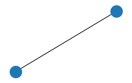

# Define example agents
params = np.array([[0.2, 0.1, 5.], # agent 1's params
[0.15, 0.05, 4.]]) # agent 2's params
example = SimpleConf(params)SimpleConf
Performs updating of state-action values according to a simple Rescorla-Wagner rule, with use of social information. Allows for asymmetric learning rates in the form of a confirmation/disconfirmation bias.
SimpleConf
SimpleConf (params:numpy.ndarray)
Class for simple reinforcement learning (Rescorla-Wagner rule) with confirmation/disconfirmation bias.
| Type | Details | |
|---|---|---|
| params | ndarray | agents’ parameters |
Example agents
To illustrate the methods, let’s consider 2 example agents. Both have a confirmation bias. Their parameters are the following:
| \(\alpha_C\) | \(\alpha_D\) | \(\beta\) | |
|---|---|---|---|
| agent 1 | \(0.2\) | \(0.1\) | \(5.\) |
| agent 2 | \(0.15\) | \(0.05\) | \(4.\) |
- \(\alpha_C\): confirmatory learning rate
- \(\alpha_D\): disconfirmatory learning rate
- \(\beta\): inverse temperature
SimpleConf methods
SimpleConf.connect_agents_full
SimpleConf.connect_agents_full ()
Connects agents according to a fully connected graph.
Input:
- None
Output:
- Fully connected, non-directed “attention graph”: each agent pays attention to all others.
Example
# Connecting example agents
G = example.connect_agents_full()
# Draw graph
plt.figure(figsize=(2.5, 1.5))
nx.draw(G)
plt.show()
SimpleConf.compute_softmax
SimpleConf.compute_softmax (Qtable)
Returns a probability table for all agents for all actions, from agents’ Qtable.
Input: * Qtable: Q-table, 2d-array: number of agents \(\times\) number of options
| option 1 | option 2 | |
|---|---|---|
| agent 1 | \(Q_{1,1}\) | \(Q_{1,2}\) |
| agent 2 | \(Q_{2,1}\) | \(Q_{2,2}\) |
Output: * Ptable: P-table, 2d-array: number of agents \(\times\) number of options
| option 1 | option 2 | |
|---|---|---|
| agent 1 | \(P_{1,1}\) | \(P_{1,2}\) |
| agent 2 | \(P_{2,1}\) | \(P_{2,2}\) |
Softmax policy
Probability that agent \(i\) chooses option \(j\) given Q-values \(Q_{i,k}\), for \(k\) any available option:
\[ P_{i,j} = \frac{exp(\beta_{i} Q_{i,j})}{\sum_{k} exp(\beta_{i} Q_{i,k})} \]
with \(\beta_{i}\) agent \(i\)’s inverse temperature.
Example
With 2 agents, 2 options, all Qs are 0.
Qtable = np.zeros((2, 2))
Ptable = example.compute_softmax(Qtable)
Ptablearray([[0.5, 0.5],
[0.5, 0.5]])SimpleConf.choose
SimpleConf.choose (Ptable)
Computes chosen options from agents’s probability table.
Input:
Ptable: P-table, 2d-array: number of agents \(\times\) number of options
| option 1 | option 2 | |
|---|---|---|
| agent 1 | \(P_{1,1}\) | \(P_{1,2}\) |
| agent 2 | \(P_{2,1}\) | \(P_{2,2}\) |
Output:
choices: choice (i.e., chosen option) list, 1d-array: number of agents
| choice | |
|---|---|
| agent 1 | \(c_{1}\) |
| agent 2 | \(c_{2}\) |
NB: options are labelled \(0\) to \(M-1\), with \(M\) number of available options.
Example
# Compute example agents' choices according to previous Ptable
choices = example.choose(Ptable)
choicesarray([0, 0])# Test: given option labelling, over many simulations, average
# choice should approach probability of choosing option 1
choices_test = np.zeros((2, 10000))
for i in range(10000): # loop over simulations
choices_test[:, i] = example.choose(Ptable)
np.mean(choices_test, axis=1) # compute averagearray([0.5149, 0.5091])SimpleConf.all_take_action
SimpleConf.all_take_action (Qtable)
Computes all agents’ choices from their Qtable. Combines compute_softmax and choose.
Input:
Qtable: Q-table, 2d-array: number of agents \(\times\) number of options
| option 1 | option 2 | |
|---|---|---|
| agent 1 | \(Q_{1,1}\) | \(Q_{1,2}\) |
| agent 2 | \(Q_{2,1}\) | \(Q_{2,2}\) |
Output:
choices: choice (i.e., chosen option) list, 1d-array: number of agents
| choice | |
|---|---|
| agent 1 | \(c_{1}\) |
| agent 2 | \(c_{2}\) |
Example
# Compute example agents' choices according to previous Qtable
choices = example.all_take_action(Qtable)
choicesarray([0, 1])# Test: given option labelling, over many simulations, average
# choice should approach probability of choosing option 1
choices_test = np.zeros((2, 10000))
for i in range(10000): # loop over simulations
choices_test[:, i] = example.all_take_action(Qtable)
np.mean(choices_test, axis=1) # compute averagearray([0.509 , 0.4981])SimpleConf.update_Qvalues
SimpleConf.update_Qvalues (G_att, choices, payoffs, Qtable)
Updates all agents’ Q-values according to CARL.
Input:
G_att: attention graph, obtained throughconnect_agents_fullchoices: choice (i.e., chosen option) list, 1d-array: number of agents
| choice | |
|---|---|
| agent 1 | \(c_{1}\) |
| agent 2 | \(c_{2}\) |
payoffs: payoff list returned by task, 1d-array: number of agents
| payoff | |
|---|---|
| agent 1 | \(r_{1}\) |
| agent 2 | \(r_{2}\) |
Qtable: Q-table, 2d-array: number of agents \(\times\) number of options
| option 1 | option 2 | |
|---|---|---|
| agent 1 | \(Q_{1,1}\) | \(Q_{1,2}\) |
| agent 2 | \(Q_{2,1}\) | \(Q_{2,2}\) |
Output: * Qtable: updated Q-table, 2d-array: number of agents \(\times\) number of options
| option 1 | option 2 | |
|---|---|---|
| agent 1 | \(Q_{1,1}\) | \(Q_{1,2}\) |
| agent 2 | \(Q_{2,1}\) | \(Q_{2,2}\) |
Example
# Update previous Q-values given following payoffs:
payoffs = np.array([-1, 1]) # first agent got -1, second got 1
example.update_Qvalues(G, choices, payoffs, Qtable) # update Q-valuesarray([[-0.1 , 0.1 ],
[-0.15, 0.15]])